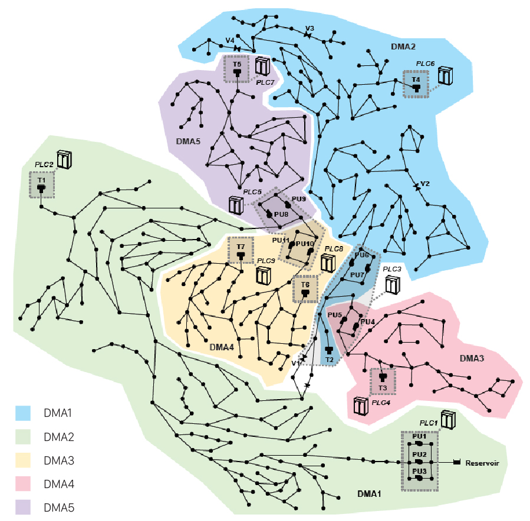

The wider scope of the project is to develop an integrated sound and visual approach to the representation of complex data for decision-making. In this phase, we focus on the monitoring of cyber attacks on water supply systems. These systems are moving from physical to cyber-physical, thus including networked devices used for a best reliability and controllability. But the nature of these devices exposes the infrastructure to cyber threats
[4]
. The goal of this project, based on simulated data, is to enable analysts to control the condition in real time and verify if the system is under attack.
Current Approach
Today, data are displayed on multiple screens using different kinds of analytical diagrams that require, to be monitored, an operator’s full visual attention. During everyday’s work activities, though, this attention might be occupied by other tasks (answering the phone, talking to colleagues, performing analysis of historical data, writing reports…). Also, the artificial intelligence algorithms currently available are bound, for many reasons, to report a high number of false positive answers on attacks. When a false alarm sounds off too many times, the unwanted consequence is that the operator stops paying attention to the alarm itself, with potentially serious consequences should an emergency really occur. In the actual situation, therefore, the alert system cannot be considered reliable.
The Project
The project uses sound to convey a “first layer” of information to the user. This first layer is meant to raise the user’s awareness on anomalies - their occurrence and the corresponding level of gravity. It should also facilitate the analyst in finding more detailed information, if needed, in the visual interface.
The reason for using sound is well grounded in scientific literature. In particular, sound has been proven to be an efficient tool for real time process monitoring
The reason for using sound is well grounded in scientific literature. In particular, sound has been proven to be an efficient tool for real time process monitoring
[5]
for cyber security.
The Scenario
We are referring to the water distribution system of a real-world, medium-sized city. On a regular day, the goal of monitoring is to become aware of any anomalous behavior in the hydraulic components - e.g. tanks overflow, reduction in pump speed, anomalous activation/deactivation of pumps. In case of an anomaly, a predefined protocol is in place to manage the emergency and/or escalate the alarm. In the presence of an anomaly, the operators should also be able to understand whether the problems can be attributed to a cyber attack to the system or to another type of failure.
Our hypothetical setting imagines that a dedicated anomaly detection algorithm is in place in the control room, updating every hour on the status of the network regarding the possibility of a cyber attack. The operator monitors, through sound, the status of the network while she/he keeps working at her/his usual tasks.
Our hypothetical setting imagines that a dedicated anomaly detection algorithm is in place in the control room, updating every hour on the status of the network regarding the possibility of a cyber attack. The operator monitors, through sound, the status of the network while she/he keeps working at her/his usual tasks.
The Data
Data used in the project come from the various component of the water system network of our imaginary town (C-Town). C-Town has five districts. Every district is marked with “DMA-n” on the map and is recognizable by the district’s background color. The anomaly detection algorithm used in this project, operates using the SCADA (main control unit) data and calculating the difference between incoming real data and predictive data based on the algorithm’s model. Whenever real incoming data differ from the prediction of the model, the algorithm detects an anomaly. The more real data transmitted from the components are far from prediction the more the anomaly detected is to be considered serious.
The system status considers five different levels, starting from zero - which means the status is healthy - to five which represents the highest level of anomaly.

The system status considers five different levels, starting from zero - which means the status is healthy - to five which represents the highest level of anomaly.
Sound-Key
Below you find the sound key to the sonification you are about to test. Sounds are divided by Scenarios (1 and 2) and Versions (A and B). The two scenarios are based on a different mapping strategy, i.e., a different correspondence between data values and acoustic parameters (for a more detailed definition please refer to Parameter mapping).
Each Scenario comes in two versions. These versions differ on the type of sound content we designed: in one case we used tuned ("musical") sounds, in the other case we used non tuned sounds ("noise"). Therefore, you will test four different prototypes to test: 1-A, 1-B, 2-A, 2-B.
In each of these prototypes, each district has been assigned a different sound, like a “sonic print” representing the district. How this sound behaves and changes during the sonification depends on the hourly data (= the level of anomaly).
Here you find the sound associated to each district in each scenario. It will help you familiarize with the “voice” of each district that you will encounter down the road during the test. The prototypes will play all districts together (cause the system receives all data together), so expect the sounds you will hear to be more complex. You can consult this sound-key any time, even during the testing sessions.
Each Scenario comes in two versions. These versions differ on the type of sound content we designed: in one case we used tuned ("musical") sounds, in the other case we used non tuned sounds ("noise"). Therefore, you will test four different prototypes to test: 1-A, 1-B, 2-A, 2-B.
In each of these prototypes, each district has been assigned a different sound, like a “sonic print” representing the district. How this sound behaves and changes during the sonification depends on the hourly data (= the level of anomaly).
Here you find the sound associated to each district in each scenario. It will help you familiarize with the “voice” of each district that you will encounter down the road during the test. The prototypes will play all districts together (cause the system receives all data together), so expect the sounds you will hear to be more complex. You can consult this sound-key any time, even during the testing sessions.
SCENARIO 1
In this Scenario, the duration of each sound is directly proportional to the level of the anomaly that the specific district presents, at a given time. The districts’ sounds start all together at the same time. Baseline duration for non - anomalous data/sound is 1 second. The longer the sound the bigger the problem is. The maximum duration is capped at ten seconds. A 10 seconds soundtrack will therefore mean that the level of anomalies in that district is at its highest.
1-A
1-B
SCENARIO 2
In this Scenario, the level of anomaly is expressed by the frequency of loops of a sound. The districts’ sounds start all together at the same time. The standard duration of the whole sonification is capped at ten second. If the sounds are played only one time at the beginning, with no loops, no anomalies are detected (this means you will hear 1 second of sounds and 9 seconds of silence). If the sound of a specific district is repeated, it means that something wrong is happening in that district. The more frequently a sound loops over the 10 seconds, the more alarming the district state is.
2-A
2-B
References
[1]
T. Hermann, A. Hunt, J. G. Neuhoff (eds.), The Sonification Handbook, Logos Publishing House: Berlin, 2011.
[2]
Bakker S., van den Hoven E., Eggen B., “Knowing by ear: leveraging human attention abilities in interaction design”, in Journal on Multimodal User Interfaces, 2010.
[3]
Sonification, Wikipedia - the Free Encyclopedia, Webpage (Last access 05/01/2018).
[4]
S. Galelli, R. Taormina, N. O. Tippenhauer, E. Salomons, “Characterizing Cyber-Physical Attacks on Water Distribution Systems”, in Journal of Water Resources Planning and Management, Volume 143 Issue 5, 2017.
[5]
L. Axon, S.Creese, M.Goldsmith, J.R. C. Nurse, “Reflecting on the Use of Sonification for Network Monitoring”, SECURWARE 2016 : The Tenth International Conference on Emerging Security Information, Systems and Technologies, 2016.
[6]
L. Axon, S.Creese, M.Goldsmith, J.R. C. Nurse, “A Formalised Approach to Designing Sonification Systems for Network-Security Monitoring”, in International Journal on Advances in Security, vol. 10, no. 1 & 2, 2017.
Other References
T. Hildebrandt, , T. Hermann, S. Rinderle-Ma, “Continuous sonification enhances adequacy of interactions in peripheral process monitoring”, in Int. J. Human-Computer Studies, vol. 95, pp. 54-65, 2016.
N. Rönnberg, J. Lundberg, J. Löwgren, “Sonifying the Periphery: Supporting the Formation of Gestalt in Air Traffic Control”, Proceedings of ISon 2016, 5th Interactive Sonification Workshop, CITEC, Bielefeld University, Germany, December 16, 2016.
D. Malandrino, D. Mea, A. Negro, G. Palmieri, V. Scarano, “NeMoS: Network Monitoring with Sound”, Proceedings of the 2003 International Conference on Auditory Display, Boston, MA, USA, July 6-9, 2003.
A.Ballatore, D. Gordon and . P. Boonec, “Sonifying data uncertainty with sound dimensions”, in Cartography and Geographic Information Science, 2018.
K. V. Nesbitt and S. Barrass, “Evaluation of a Multimodal Sonification and Visualization of Depth of Market Stock Data” in Proceedings of the 2002 International Conference on Auditory Display, Kyoto, Japan, July 2-5, 2002.
R. Taormina, S. Galelli, N. Tippenhauer et al., “The Battle of the Attack Detection Algorithms: Disclosing Cyber Attacks on Water Distribution Networks”, Authors Copy ? 2018.
A. Kobsa, “User Experiments with Tree Visualization Systems”, in Proceedings of InfoVis 2004, IEEE Symposium on Information Visualization, Austin, TX, 2004.
A. Patcha, Jung-Min P., “An overview of anomaly detection techniques: Existing solutions and latest technological trends” in Computer Networks, vol. 51, pp. 3448–3470, 2007.